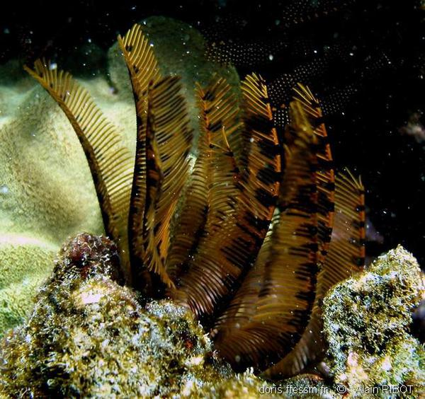

RECONNAÎTRE LES ANIMAUX MARINS ... pas si simple!
Echinodermes
Les Echinodermes forment un groupe très ancien dont le point commun est leur “peau épineuse” (en grec “Echinos” = épine et “Dermos” = peau). Ils ont aussi la particularité d’avoir une symétrie pentaradiaire (d’ordre 5). Ils regroupent les oursins, les étoiles de mer, les ophiures, les holothuries (concombres de mer) et les crinoïdes.
Les Échinodermes (du grec echinos = hérisson ou épine, et derma = peau), qui tous habitent la mer, où on les trouve par tout le globe, aussi bien à la côte qu'au large et dans les plus grands fonds, forment un vaste phylum du règne animal, que l'on peut caractériser sommairement comme il suit : animaux à symétrie rayonnée (le plus souvent pentaradiée), caractérisés par l'existence d'une peau nettement distincte des organes sous-jacents, souvent pourvue de pointes ou d'épines fixes ou mobiles, et soutenue souvent aussi par une sorte de squelette intérieur; cette peau, en tous cas, possède toujours un nombre plus on moins considérable de prolongements ou cirres en forme de tentacules et servant à la fois à la locomotion, à la respiration et au toucher. Le corps des échinodermes présente toujours une cavité viscérale, où sont renfermés l'appareil digestif et les principaux organes de circulation, de respiration, de reproduction. Leur système nerveux est bien développé.
Les Échinodermes constituent l'un des groupes les plus naturels, les plus homogènes et, partant, les plus isolés du règne animal. Pendant longtemps, les zoologistes, frappés surtout de leur symétrie rayonnée, les réunirent dans un même embranchement avec les Cnidaires, sous le nom de Rayonnés. Leuckart montra que leur organisation interne, très particulière, permettait d'en faire un groupe parfaitement autonome, et cette manière de voir a été adoptée par tous les naturalistes. Nous allons la justifier en passant en revue les principaux traits de l'organisation de ces animaux.
|  |